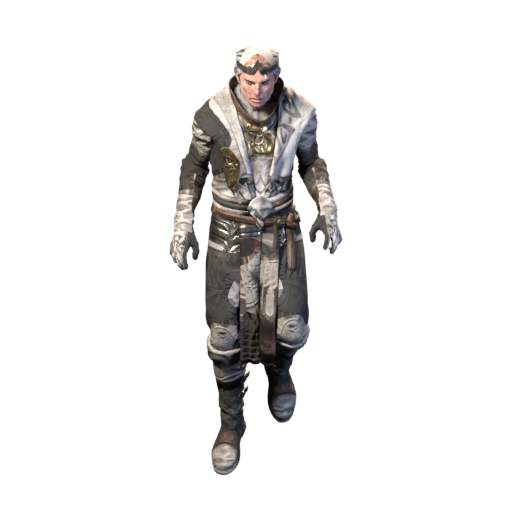

The uber bosses of Diablo II wait in Hell as they always have, behind the keys and organs you know.
Keys
Key sources: Key of Terror: Terror Zone act bosses · The Countess · Hell · 7.14%; Key of Hate: Terror Zone act bosses · The Summoner · Hell · 8.615%; Key of Destruction: Nihlathak · Terror Zone act bosses · Hell · 7.932%.

The Countess
Tower Cellar Level 5

The Summoner
Arcane Sanctuary
Horadric LensArcane GlassArcane LodestoneKey of Hate
Nihlathak
Halls of Vaught
The Elders' PyreKey of DestructionPandemonium
Cube one of each in Harrogath, in Hell: each set opens one of the three fights. Each boss guards one organ.


Lilith
Matron's Den

Uber Izual
Furnace of Pain

Uber Duriel
Forgotten Sands
Uber Tristram
Cube the three organs in Harrogath, in Hell. Uber Mephisto, Uber Diablo and Uber Baal wait together in Tristram.


Uber Mephisto
Tristram

Uber Diablo
Tristram

Uber Baal
Tristram
Shade of Diablo
The Shade of Diablo
Cube a Pentagram of Chaos and three Stones of Jordan in Harrogath, Hell, to enter the Unsealed Sanctuary.


Cube in Harrogath, on Hell. Enter the Unsealed Sanctuary.

Rewards
AnnihilusShade of Diablo · Hell · 100% Hellfire TorchUber Diablo · Hell · 100%
Hellfire TorchUber Diablo · Hell · 100% Baal's DestructionUber Baal · Hell · 0.8% (1 in 125)
Baal's DestructionUber Baal · Hell · 0.8% (1 in 125) Diablo's TerrorUber Diablo · Hell · 0.8% (1 in 125)
Diablo's TerrorUber Diablo · Hell · 0.8% (1 in 125) Izual's BetrayalUber Izual · Hell · 0.8% (1 in 125)
Izual's BetrayalUber Izual · Hell · 0.8% (1 in 125) Lilith's GazeLilith · Hell · 0.8% (1 in 125)
Lilith's GazeLilith · Hell · 0.8% (1 in 125) Mephisto's HatredUber Mephisto · Hell · 0.8% (1 in 125)
Mephisto's HatredUber Mephisto · Hell · 0.8% (1 in 125)Every key and organ is listed under Sigils and keys.
Next: Sanctuary Stones →